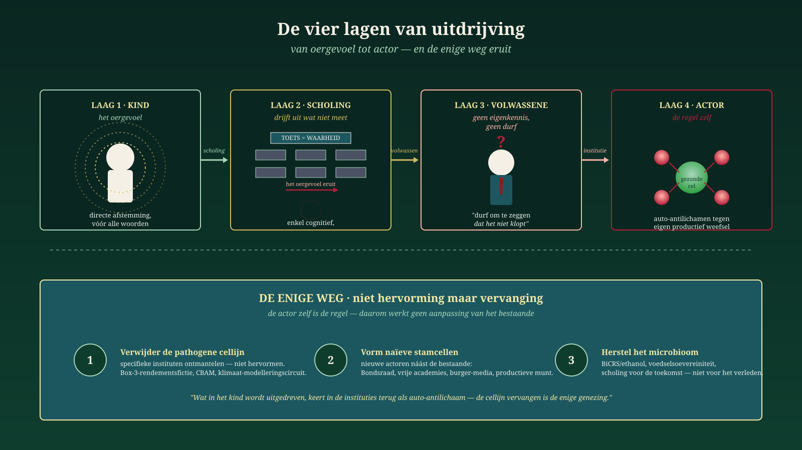

Der Akteur ist die Regel
Warum Reform unmöglich und Ersatz unvermeidlich ist — und wie die Medizin der Autoimmunkrankheit uns zeigt, wie das niederländische System wirklich zu heilen ist.
Jacobus van Merksteijn · Malta, Juni 2026
In drei früheren Beiträgen haben wir eine Argumentation aufgebaut, die beim neugeborenen Kind beginnt und beim kranken System endet. In diesem vierten Stück wird die Argumentation bis zu ihrer äußersten Konsequenz geführt. Was dabei herauskommt, ist keine Diagnose mehr und kein Aufruf zu besserer Politik. Was herauskommt, ist eine Revolutionsfrage: Welche Akteure existieren 2030 noch, welche sind dann ersetzt worden?
Die drei früheren Schichten, kurz zusammengefasst
Schicht 1 — In Raum für das Urgefühl stellten wir fest, dass im Menschen etwas vorhanden ist, bevor er sprechen kann: eine direkte, körperliche Abstimmung zwischen Menschen. Keine Mystik — ein neurophysiologisches Faktum, gestützt durch Porges und McGilchrist. Aber dieses Urgefühl wird unbewusst verlernt durch ein Erziehungs- und Bildungssystem, das restlos auf das Messbare, das Sprachliche und das Kognitive ausgerichtet ist. Was nicht in einen Test passt, wird unsichtbar gemacht. Was unsichtbar wird, stirbt aus. Das ist die erste Austreibung — nicht von Menschen, sondern von einem Vermögen in Menschen.
Schicht 2 — In Die Versorgungslinie verfolgten wir, was mit diesem ausgetriebenen Menschen in seinem Erwachsenenleben geschieht. „Der Mut zu sagen, dass es nicht stimmt, fehlt durch Mangel an Eigenkenntnis — ein struktureller Fehler, kein Charakterfehler." Unsere Institutionen, Verfahren, Entscheidungsfindung und unser Bildungswesen sind auf evolutionäres Handeln und Denken aufgebaut: kleine Schritte, Konsensbildung, Behutsamkeit. Wer sich darin bewegt, wird akzeptiert. Wer sich außerhalb bewegt, ist per Definition systemfremd. Die Bildung von heute bereitet auf gestern vor. Was die Zukunft braucht, lernen wir nicht.
Schicht 3 — In Das Immunsystem, das gesunde Zellen angreift beschrieben wir die Folge auf Systemebene. Ein gesunder Körper erkennt Eindringlinge und schaltet sie aus. Ein kranker Körper greift seine eigenen gesunden Zellen an. So funktioniert die Niederlande jetzt: der Bauer, das KMU, der GGF, der Handwerker, der Erfinder, der Rebell mit Wissen — allesamt gesunde Zellen, die von Auto-Antikörpern angegriffen werden. Nicht aus Böswilligkeit. Aus Selbsterhaltung des kranken Systems.
Schicht 4 — der Akteur selbst
Und nun der Schritt, der die drei früheren Schichten zu einer revolutionären Feststellung macht: Es sind nicht die Strukturen, die krank sind, es sind die Akteure. Das Ministerium für Klima ist kein neutraler Apparat, der falsche Politik ausführt. Es ist eine Sammlung von Menschen, die durch Bildung, Selektion und Kultur so geformt wurden, dass sie das Urgefühl nicht mehr kennen, keine Eigenkenntnis zu entwickeln gewagt haben, und dadurch automatisch als Auto-Antikörper gegen jedes abweichende Wissen auftreten. Das CPB ist nicht zufällig blind für BiCRS — das CPB ist die Organisation, die nur rechnen kann, was ins alte Modell passt. Die FNV produziert keine zufällig anti-produktive Politik — die FNV ist der geronnene Ausdruck eines Weltbilds, das Produktivität als Bedrohung sieht.
Der Fehler liegt nicht darin, dass unsere Institutionen falsch handeln.
Der Fehler liegt darin, dass unsere Institutionen sind, was sie sind.Reform ist unmöglich, weil der Reformer und das zu reformierende Objekt ein und dasselbe sind. Der einzige Weg ist Ersatz — und der beginnt mit der Anerkennung, dass die heutigen Akteure niemals selbst das Urteil über ihre Daseinsberechtigung fällen werden.
Das ist keine Rhetorik. Das ist genau das, was wir in der Medizin bei der Behandlung von Autoimmunkrankheiten lernen mussten. Generationen von Ärzten haben versucht, das kranke Immunsystem zu „umerziehen", „umzulenken", „mit Immunsuppression zu beruhigen". Was nach fünfzig Jahren deutlich wurde: Die auto-immune B-Zelllinie ist keine gesunde Zelle, die falsch eingestellt wurde. Es ist eine Zelllinie, deren Identität selbst autoimmun ist. Man kann sie nicht umerziehen. Man muss sie entfernen. Danach können aus naiven Stammzellen — die nie die falsche Programmierung hatten — neue B-Zellen entstehen.
Das ist, was CAR-T-Zelltherapie bei Lupus, Multipler Sklerose und Sklerodermie tut. Und das ist, was die Politik in den Niederlanden braucht.
Fünf medizinische Therapien, fünf politische Entsprechungen
Die Medizin der Autoimmunkrankheit kennt fünf aufsteigende Behandlungsrouten. Jede hat einen direkten politischen Spiegel. Wer sie nebeneinanderlegt, sieht sofort, wo sich niederländische Parteien und Verwaltungsakteure befinden — und was das notwendige Endziel ist.

Fünf aufsteigende Behandlungsrouten — von der Symptombekämpfung (Route 1) bis zur Mikrobiom-Wiederherstellung (Route 5). Die Gewinnerkombination: Route 2 + 4 + 5.
Route 1 · Breite Immunsuppression ↔ Subventionen und Kaufkraftpakete
Der Arzt gibt Prednison. Das Immunsystem wird insgesamt unterdrückt — gesund und krank zusammen. Die Symptome weichen kurz, aber die Krankheit geht weiter und der Patient wird abhängig vom Mittel. Nebenwirkungen häufen sich, Infektionen drohen, der Körper schwächt sich.
Politisch übersetzt: Subventionen, Zuschüsse, Energieentschädigungen, Kaufkraftpakete, generelle Lohnerhöhungen über Tarifverträge. Das ist der Modus von GroenLinks-PvdA, D66, VVD, CDA und NSC. Es ist der Modus von FNV und CNV. Jeder bekommt etwas ausgezahlt, der Patient fühlt sich kurz erleichtert, aber der zugrundeliegende Krankheitsprozess — der Angriff des Systems auf sein eigenes produktives Gewebe — geht ungemindert weiter. Und jede Zahlung macht die zahlende Instanz unentbehrlicher.
Route 2 · CAR-T-Zelltherapie ↔ spezifische Institutionen abbauen
Der Arzt erntet T-Zellen des Patienten und programmiert sie mit einem Rezeptor (CD19 oder BCMA), der gezielt die falsche B-Zelllinie erkennt und tötet. Der Rest des Immunsystems bleibt intakt. Bei Lupus, MS und Sklerodermie sind Patienten nach einer einzigen Behandlung medikamentenfrei in Remission gegangen.
Politisch übersetzt: Das ist nicht „ein kleinerer Staat", das ist nicht „Entlastung im allgemeinen Sinne". Das ist konkret die Box-3-Renditefiktionsabschaffung. Das CBAM zurückziehen. Den Stickstoff-Bewertungskreislauf (Kommission, Modellierer, Juristen) als Ganzes entfernen. Den Klimamodellierungsapparat abbauen. JA21 und BBB deuten hier vorsichtig hin; Teile von FvD und PVV in schärferer Form. Aber deuten ist nicht dasselbe wie ausführen. CAR-T wirkt nur, wenn die Marker scharf sind — sonst werden auch gesunde Zellen getroffen.
Route 3 · Autologe Stammzelltransplantation ↔ institutionelle Revolution
Der Arzt erntet zuerst die Stammzellen, verbrennt dann das vollständige Immunsystem chemisch weg und infundiert dann die eigenen Stammzellen zurück. Es ist ein Reset: aus naiven Zellen wird ein frisches Immunsystem ohne das Auto-Immun-Gedächtnis aufgebaut. Funktioniert — oder vernichtet. Die Zwischenphase ist verwundbar: in Immun-Aplasie kann jede Infektion tödlich sein.
Politisch übersetzt: institutionelle Revolution. Verfassungsrevision, Wahlrechtsrevision, ganze Ministerien auflösen, monetäre Neuordnung, EU-Position überdenken. Nova Democratia/VMP und Teile von FvD deuten in diese Richtung. Die Methode funktioniert — erfordert aber starke Logistik und politische Immunität gegen Panik während der Zwischenphase. Für leichte Fälle ungeeignet; für terminal-refraktäre Situationen manchmal die einzige Option.
Route 4 · Treg-Zell-Therapie und tolerogene Zellen ↔ neue Akteure neben den alten
Das ist die am meisten unterbelichtete und zugleich grundlegendste Route. Der Arzt züchtet regulatorische T-Zellen (Treg-Zellen) im Labor, vermehrt sie, programmiert sie mit einem Rezeptor für das spezifische Auto-Antigen und infundiert sie zurück. Oder: er reprogrammiert dendritische Zellen, sodass sie das Auto-Antigen in einem Friedenssignal präsentieren. Das Immunsystem lernt neu, dass dieses Gewebe eigen ist. Keine rohe Unterdrückung, kein totaler Reset — Umerziehung über eine neue Zelllinie neben der bestehenden.
Politisch übersetzt: Nicht die FNV „reformieren", sondern eine produktive Arbeitnehmerbewegung neben der FNV gründen. Nicht die NOS „pluralisieren", sondern ein bürgerfinanziertes pluralistisches Mediannetz aufbauen, das die NOS irrelevant macht. Nicht die Erste Kammer „anpassen", sondern einen Bundesrat einrichten, der Gegenmacht des Wissens strukturell verankert. Nicht hoffen, dass die Universität sich selbst reformiert, sondern freie Akademien gründen, die die alten überflüssig machen. Das ist keine Anpassung, das ist Ersatz — aber in fließender Form, mit Aufbau vor dem Abbau.
Route 5 · Ernährung und Mikrobiom ↔ wirtschaftlich-kulturelles Mikrobiom
Die am wenigsten spektakuläre und vielleicht grundlegendste Route. Kurzkettige Fettsäuren — gebildet von Darmbakterien aus Ballaststoffen — steuern direkt die Treg-Zell-Bildung. Ein armes Mikrobiom liefert zu wenig Treg-Zellen, also chronische Entzündung. Eine gestörte Darmwand lässt kontinuierlich Reize durch, die das Immunsystem aufwiegeln. Ohne Wiederherstellung des Mikrobioms wirkt keine andere Therapie dauerhaft.
Politisch übersetzt: Das ist das wirtschaftlich-kulturelle Mikrobiom der Niederlande. BiCRS/Ethanol als eigener Kohlenstoffkreislauf. Ernährungssouveränität. Eine produktive Währung, die Innovation finanziert statt Schulden umwälzt. Vermögensbildung bei Arbeitnehmern und KMU statt nur bei Vermögensfonds. Bildung für die Zukunft statt für die Vergangenheit. Und in einer Linie, die direkt auf das erste Manifest dieser Tetralogie zurückführt: Raum für das Urgefühl in der Grundschule, bevor das kognitive Gebäude errichtet wird. Dort beginnt die Treg-Zell-Bildung buchstäblich: in einer Erziehung, die das Kind nicht zuerst austreibt.
Die revolutionäre Erkenntnis
Keine einzige Route allein funktioniert. Die Gewinnerkombination ist Route 2 + 4 + 5: gezielte Demontage pathogener Institutionen, paralleler Aufbau neuer Akteure neben den alten, und Wiederherstellung der wirtschaftlichen und kulturellen Ernährungsbasis.
Route 3 — vollständiger institutioneller Reset — bleibt in Reserve für den Fall, dass Route 2-4-5 durch Immun-Blockade des Patienten selbst unmöglich gemacht wird. Das bedeutet: wenn der Kranke die Behandlung verweigert und sich für weitere Symptom-Dämpfer entscheidet.
Route 1 — Subventionen und Kaufkraftpakete — muss bewusst abgebaut werden. Nicht abrupt, denn der Patient ist abhängig geworden. Aber jede Verlängerung von Route 1 vergrößert die Macht der angreifenden Zelllinie.
Die angreifenden Akteure und das geschützte Gewebe
Wer die Autoimmunreaktion stoppen will, muss zuerst explizit benennen, welche Akteure angreifen und welches Gewebe angegriffen wird. Diese Unterscheidung wird in der heutigen niederländischen Politik bewusst verwischt — sprachlich, juristisch und moralisch —, um den Angriff ohne Widerstand fortsetzen zu können. Hiermit die klare Benennung:
| Angegriffene gesunde Zelle (produktives Gewebe) | Angreifender Auto-Antikörper-Akteur (aktuell) | Ersatzakteur (Treg / neue Zelllinie) |
|---|---|---|
| Der Bauer · Nahrung und Kohlenstoffkreislauf | Min. Klima, Stickstoff-Juristen, RVO | Ernährungssouveränitätsrat mit Bauer als Mandatsträger |
| Der GGF · Kapitalbildung und Nachfolge | Finanzamt Box-3, GL-PvdA-Fiskalpolitik | Mitbesitzfonds, Unternehmer-Verfassungsrechte |
| Das KMU · Beschäftigung und Innovation | RVO-Regulierungsdruck, EU-Richtlinienkette | Freie Zonen, fiskalisch stabile Jahre, Ein-Schalter-Staat |
| Der Handwerker · Produktion und Handwerk | Bildungsministerium, kognitive Testkultur | Fachschulen mit Urgefühl-Pädagogik, Meister-Lehrling |
| Der Erfinder · Zukunft und Patentmacht | Patentbürokratie, EU-Subventionstore | Freie Akademien, Erfinder-Grundrecht, BiCRS-Pfad |
| Der Rebell · Benennung und Kurskorrektur | Mainstream-Medien, CPB-Monokultur, Parteidisziplinen | Bürger-Medienstiftungen, Bundesrat, Nova Democratia/VMP |
Die Revolutions-Routenkarte
Die Kombination der Erkenntnisse aus der Tetralogie und der medizinischen Analogie ergibt eine konkrete, nachvollziehbare Route. Keine Revolution als Sturm, der alles hinwegfegt, keine Revolution als gewaltsamer Moment — sondern Revolution als Zellersatz in einem lebenden Organismus, in vier aufeinanderfolgenden Phasen.

Von der Diagnose zum Ziel in vier Schritten — CAR-T-Eingriff (erste 100 Tage), Stammzellen bilden (1–3 Jahre), neue Organe neben den alten, Mikrobiom nähren für den langen Atem.
Schritt 1 — Der CAR-T-Eingriff · erste 100 Tage
Gezielt. Schnell. Spezifisch. Kein breiter Schlag, kein „wir werden alles verändern", sondern drei oder vier scharf benannte Interventionen, deren Marker eindeutig sind. Box-3-Renditefiktionsabschaffung und Ersatz durch tatsächliche Vermögensrenditebesteuerung. CBAM zurückziehen. Stickstoff-Bewertungskreislauf demontieren. Eine Handvoll weiterer Engpässe als Kandidaten. Nicht ganze Ministerien auflösen — dafür ist es zu früh, und das nächste System muss erst bereit sein — aber spezifische Zelllinien entfernen, wie CAR-T es tut.
Schritt 2 — Die Stammzell-Bildung · Aufbauphase 1 bis 3 Jahre
Parallel zum CAR-T-Eingriff wird naives Gewebe gebildet. Hier unterscheidet sich Nova Democratia/VMP grundsätzlich von einer gewöhnlichen „neuen Partei in der bestehenden Landschaft". Eine naive Stammzelle, die in der verseuchten Thymus aufgezogen wird, bekommt denselben Fehler mit — deshalb muss die Zelllinie außerhalb des bestehenden Systems gebildet werden. Eigene Mitgliederkultur, eigene Auswahlkriterien, die nicht auf Aktenwissen, sondern auf Eigenkenntnis beruhen (im Sinne von Schicht 2: Mut, Selbstreflexion, Erkennung des Urgefühls). Eigene Ausbildung für Verwaltende, frei von den Denkrahmen, die die Verseuchung verursacht haben. Das ist Arbeit von Jahren, nicht von Monaten — aber es ist die wichtigste Arbeit der ganzen Revolution.
Schritt 3 — Neue Organe aufbauen · parallele Strukturen
Bundesrat neben der Ersten Kammer. Freie Akademien neben den Universitäten. Bürger-Medienstiftungen neben NOS und großen Tageszeitungen. Produktive Arbeitnehmervereinigungen neben FNV und CNV. Mitbesitzfonds neben der Pensionsfonds-Monokultur. Nicht im alten — daneben. Das Alte wird von selbst irrelevant, sobald die neuen Organe funktionieren — electorally, wirtschaftlich, kulturell. Das ist die Toleranz-Route: nicht mit Antikörpern kämpfen, sondern neue Treg-Zellen bilden, die das System rekalibrieren.
Schritt 4 — Mikrobiom nähren · der lange Atem
BiCRS/Ethanol-Kohlenstoffkreislauf aufbauen. Ernährungssouveränität verankern. Produktive Währung einführen oder Euro vor fiskalem Raub bewahren. Vermögensbildung bei Arbeitnehmern verbreitern. Und, fundamental: Bildung überdenken, damit das Urgefühl nicht zuerst ausgetrieben wird, bevor das kognitive Gebäude errichtet wird. Treg-Zell-Bildung beginnt in der Grundschule. Wer keine freie, produktive Generation heranzieht, kann 2050 seine Institutionen erneut an einen neuen Auto-Immun-Zyklus verlieren.
Die Warnung der Medizin
Schritt 1 ohne Schritte 2-3-4 = leichtsinnige Chirurgie. Man entfernt pathogenes Gewebe, ohne eine Ersatzzelllinie bereit zu haben, und der Körper reagiert mit Überkompensation oder bricht zusammen.
Schritte 2-3-4 ohne Schritt 1 = parallele Strukturen, die von der pathogenen Zelllinie neutralisiert werden, bevor sie funktionieren können. Die Auto-Antikörper bleiben dann frei, jede neue Treg-Zell-Population anzugreifen.
Nur die Kombination funktioniert. In der richtigen Reihenfolge. Mit Respekt für das Tempo des Organismus.
Was das politisch konkret bedeutet
Für den niederländischen Wähler ist die praktische Frage bei jeder Partei, die sich in den kommenden Jahren präsentiert: Auf welchem Niveau operiert diese Partei? Eine Partei, die ausschließlich Route 1 verkauft (Kaufkraftpakete, breite Subventionen), verlängert die Krankheit. Eine Partei, die nur Route 2 verspricht (Regelungen streichen) ohne Route 4 anzubieten, führt Chirurgie ohne Ersatzgewebe durch. Eine Partei, die Route 3 verspricht (totaler Reset) ohne Route 5 zu unterstützen, riskiert den Tod durch Unterernährung in der Zwischenphase. Nur Parteien, die Route 2 + 4 + 5 in gegenseitiger Verbindung anbieten, operieren auf revolutionärem Niveau im medizinischen — das heißt: wirksamen — Sinne des Wortes.
Für die heutigen Institutionen gilt: Ein Ministerium kann das nicht reformieren. Eine Gewerkschaft kann das nicht aus sich heraus. Ein Medienhaus kann das nicht aus seinem Redaktionsrat heraus. Nicht weil die Menschen darin schlecht sind — oft sind sie gerade intelligent und wohlgesonnen — sondern weil ihre Grundlage, ihr Selektionsmechanismus, ihre Karriereleiter und ihre interne Sprache zusammen die Regel ausmachen, die sie zum Auto-Antikörper programmiert. Wer innerhalb der FNV eine produktive Arbeitnehmerbewegung zu gründen versucht, wird von der FNV verstoßen oder neutralisiert. Wer innerhalb der NOS Pluralismus versucht, scheitert an seiner eigenen redaktionellen Kultur. Die Zelllinie ersetzt sich nicht selbst.
Der eine Satz der Tetralogie
Die vier Artikel zusammen lassen sich in einer einzigen Aussage zusammenfassen. Wir schlagen vor, dass dieser Satz das Motto der Bewegung wird, die diese Revolution trägt:
Das Motto der Tetralogie
Was im Kind als Urgefühl ausgetrieben wird, wird im Erwachsenen als Eigenkenntnis-Mangel sichtbar, und in den Institutionen als Autoimmunreflex gegen jede gesunde Zelle. Die Akteure selbst sind die Regel — und deshalb kann nur Ersatz, nicht Reform, den Organismus retten.
Das ist kein Mantra zum Einrahmen. Es ist eine Diagnose, eine Routenkarte und ein Arbeitsprogramm. Wer diesen Satz wirklich versteht, weiß, was in den nächsten fünf Jahren geschehen muss — und welche Akteure 2030 noch existieren sollen und welche nicht.
Zum Abschluss · die Einladung
Die Revolution von Het Open Vizier ist keine Revolution der Straße und des Steins. Es ist eine Revolution des Zellersatzes. Geduldig, gezielt, fundamental — und nicht mehr rückgängig zu machen, sobald die neuen Zelllinien funktionieren. Es ist genau die Revolution, die ein lebender Organismus braucht, um von einer Autoimmunkrankheit zu genesen: vier oder fünf parallele Behandlungsrouten, in einem nachvollziehbaren Tempo eingesetzt, getragen von Menschen, die außerhalb der verseuchten Thymus aufgezogen wurden.
Die Medizin lehrt uns, dass das möglich ist. Lupus-Patienten, die jahrelang mit Prednison gedämpft wurden, gehen nach einer CAR-T-Behandlung medikamentenfrei in Remission. Sklerodermie-Patienten, die keine Reflexbehandlung mehr hatten, bekommen nach Stammzell-Reset ihr Leben zurück. Typ-1-Diabetiker, deren Langerhanssche Inseln weggegessen wurden, behalten unter Treg-Zell-Therapie ihre verbleibenden Inseln. Kein Wunder, keine Mystik — Zellersatz auf dem richtigen Niveau, in der richtigen Reihenfolge, mit Respekt für das Mikrobiom.
Was im Körper möglich ist, ist in einem politischen System möglich. Sofern wir den Mut haben, die Diagnose wirklich ins Auge zu fassen. Sofern wir den Mut haben zu sagen, dass es nicht stimmt — jenen Mut, der durch Mangel an Eigenkenntnis fehlt, wie Schicht 2 uns bereits lehrte. Sofern wir die Bereitschaft haben, nicht die bestehenden Akteure überzeugen zu wollen, sondern neue neben ihnen aufzubauen. Sofern wir das Urgefühl in unseren Kindern nicht länger austreiben lassen, denn das ist die Treg-Quelle von morgen.
Die Tetralogie ist damit vollständig. Eine Diagnose in vier Schichten. Eine Behandlung in fünf Routen. Eine Routenkarte in vier Phasen. Und ein Motto, das alles zusammenhält.
Der Rest liegt bei uns — bei Ihnen, Leser — zum Tragen. Nicht indem man die alten Institutionen umstimmt. Sondern indem man, geduldig und gezielt, den neuen hilft zu entstehen.
Die Frage an Sie, Leser
Drei Fragen, die diese Tetralogie an Sie weitergibt:
- Welchen neuen Akteur wollen Sie entstehen helfen? Eine freie Akademie in Ihrem Fachgebiet. Eine Bürger-Medienstiftung in Ihrer Region. Eine produktive Arbeitnehmerbewegung in Ihrer Branche. Einen Mitbesitzfonds in Ihrem Unternehmen. Der Zelllinienaustausch beginnt bei denen, die sich anmelden, naive Stammzelle zu sein.
- Welchen alten Akteur verweigern Sie weiterhin zu nähren? Mit Ihrem Mitgliedsbeitrag, Ihrem Klickverhalten, Ihrer Stimme, Ihrer Aufmerksamkeit, Ihrer Teilnahme an Verfahren, von denen Sie wissen, dass sie nicht mehr funktionieren. Die pathogene Zelllinie nährt sich von Ihrer fortgesetzten Teilnahme.
- Welche Schicht sind Sie selbst? Spüren Sie noch die Austreibung des Urgefühls (Schicht 1)? Erkennen Sie den Eigenkenntnis-Mangel in sich selbst oder in Ihren Verwaltenden (Schicht 2)? Waren Sie Zeuge der Autoimmunreaktion gegen eine gesunde Idee (Schicht 3)? Oder sind Sie selbst bereits Akteur in einer neuen Zelllinie (Schicht 4)? Ihre Antwort bestimmt, was Sie jetzt zu tun haben.
Reaktionen über den Newsletter werden gelesen — und bei Mehrwert in eine Fortsetzung aufgenommen. Das ist kein Monolog. Das ist ein Organismus, der sich selbst neu erkennen lernen will.